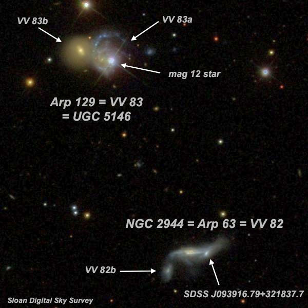
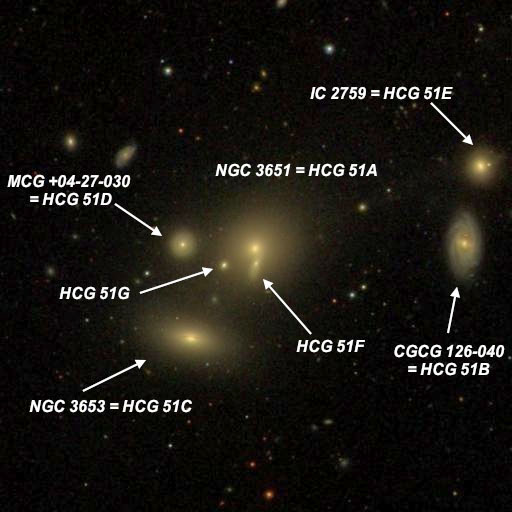
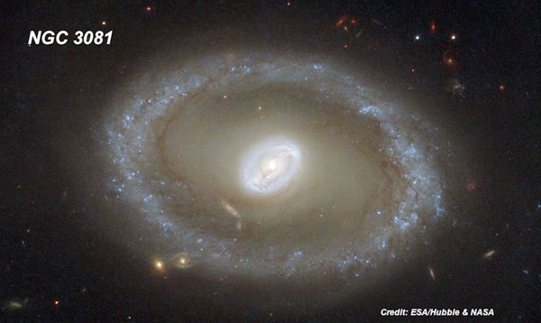
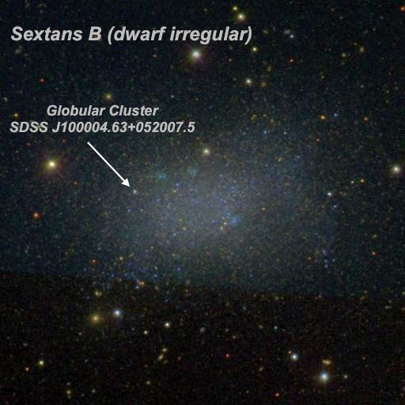
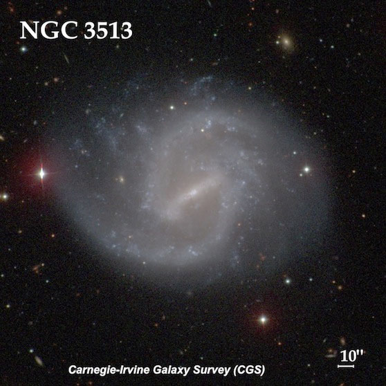
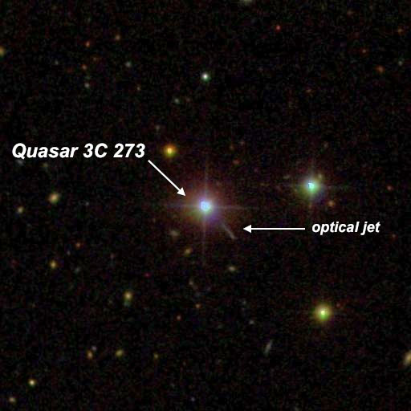
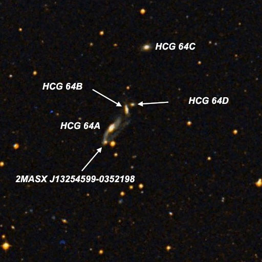

OR: April observing with a 48-inch in Texas (Part II)
by Steve Gottlieb
|
Here's the second installment of my observing adventure a couple of weeks ago with Howard Banich. We had three thrilling nights (one completely clouded out) observing with Jimi Lowrey's 48-inch in Fort Davis, Texas near the site of the Texas Star Party and McDonald Observatory. On Friday and Saturday nights (Apr 17 and 18) we had intermittent clouds and wind and a dust storm even blew in late on Saturday night, but we still managed to see a number of remarkable objects. These are a few of my favorites (more to come). Most of the labeled images are from the Sloan Digital Sky Survey (http://www.sdss.org/) with identifications culled from NED (NASA-IPAC Extragalactic Database, https://ned.ipac.caltech.edu/) and HyperLeda (http://leda.univ-lyon1.fr/). The VV designations are from Russian astronomer Vorontsov-Velyaminov's 1959 "Atlas and Catalogue of Interacting Galaxies", which lists 355 interacting systems. This atlas may have inspired Halton Arp to investigate these bizarrely distorted systems. More than half of the 338 entries in his 1966 "Atlas of Peculiar Galaxies" are listed in V-V's atlas! The first target below is an excellent example with two Arps/VVs in the same field! I wrote an article titled "Seeking Interacting Galaxies" in the September 2014 issue of Sky and Telescope magazine. A number of the Arp systems are featured at peculspr.htm HCG designations are from Paul Hickson's list of 100 compact galaxy groups (HCG), first published in 1982. To make the list, the group had to contain at least 4 galaxies in a
compact configuration, as well as being isolated from other nearby galaxies. The galaxies within each group were labeled with letter designations such as HCG 51A (also known as NGC
3651). An excellent list of the better HCGs is at hicklist.htm, along with identification charts and descriptions. The complete Hickson and Arp catalogue
can be downloaded at catalogs.htm -- Steve Gottlieb |
|

Here are two interesting Arps with a separation of just 3.5'! At 697x, the double (or possibly triple) system NGC 2944 appeared moderately bright, very elongated 3:1 E-W, ~36"x12", weak concentration. A small roundish knot (SDSS J093916.79+321837.7 ) attached at the west end has a moderately high surface brightness and a diameter of 8"-10". On the SDSS this "knot" appears to be the core of a merged interacting companion! VV 82b is another interacting companion, just 27" SE of center. It appeared extremely faint, very small, round, 10" diameter. It was only visible with averted for short periods. PGC lists a photographic mag of 18.6. The double system Arp 129 = VV 83 = UGC 5146 is 3.5' NNE. At 697x; the eastern component appeared moderately to fairly bright, small, round, high surface brightness, ~20" diameter. A mag 12 star, superimposed on the western component VV 83a = MCG +06-21-071 is just 30" WSW. The western component of Arp 129 appeared fairly faint, fairly small, roundish, nearly even surface brightness? Although easily visible, the view is significantly impaired by the 12th magnitude star and the galaxy was only visible on the east side of the star. NGC 2944 was missed by the Herschels and discovered by Johann Palisa on March 27, 1886 with the 12-inch refractor at the Vienna University Observatory.  I had previously observed 5 members of this septet with my 17.5" back in 1996. The object labeled as CGCG 126-040 = HCG 51B is misidentified in most modern sources as IC 2759. That number applies to the small, but higher surface brightness galaxy just to its north (HCG 51E). The two NGC members (NGC 3651 and 3653) were both discovered by William Herschel on April 10th, 1785. NGC 3651is the brightest of the 7 members in HCG 51. At 488x, it appeared moderately to fairly bright, round, 0.6' diameter. It forms a merged double system with HCG 51F at the south edge. The companion is faint to fairly faint, very small, elongated 2"1 ~N-S, ~12"x6". The two galaxies were not cleanly separated but there is a dip in brightness at the point they merge. NGC 3653 lies 1.5' SE. HCG 51G, just 28" SE, is a faint, round, quasi-stellar knot under 10" diameter. MCG +04-27-030 = HCG 51D is 1' E and appeared fairly faint, small, round, 15"
diameter, brighter nucleus. CGCG 126-040 = HCG 51B is 2.8' W and the largest in the septet. It appeared moderately bright, elongated 2:1 N-S, 0.8'x0.4', sharply concentrated with
a small bright core. Most catalogues misidentify this galaxy as IC 2759, which lies 1' further NNW. IC 2759 = HCG 51E is also moderately bright but small, round, 18" diameter,
sharply concentrated with a small bright core.  NGC 3081 is another William Herschel discovery. He swept up this galaxy on Dec 21, 1786 and recorded it as "very faint, small, little brighter in the middle. South of a triangle of unequal small stars." American astronomer Lewis Swift independently found it over a century later on 11 Apr 1898, assumed it was new, and Dreyer catalogued it again as IC 2529. So, NGC 3081 = IC 2529. It lies at a distance of over 85 million light-years and is type II Seyfert galaxy, characterised by its prominent, active nucleus. It contains a central barred ring structure known as a resonance ring and harbor a massive central black hole. The outer ring, peppered with newly minted massive blue clusters, was our main target. We viewed this beautiful ring galaxy at 488x and 610x. It was very sharply concentrated with a very bright, roundish core (slightly oval at 610x) core that gradually increases to a stellar nucleus. The surface brightness drops significantly in the inner halo, but then brightens at the edge to a well defined oval ring, extending 5:3 WSW-ENE, 1.3'x0.8'. The ring is fairly narrow and brighten slightly at the ends of the major axis (southwest and northeast ends). This is a very distinctive object!  Sextans B is a nearby dwarf galaxy discovered by Albert Wilson at Palomar in 1952-54 (though some sources cite Fritz Zwicky as the discoverer). It is generally considered to lie just outside the local group in a small group including Sextans A, Antlia Dwarf and NGC 3109. Our main target was not the galaxy itself, but a globular cluster discovered in 2007 in the eastern side of the galaxy! I've observed this galaxy a few times in my 18-inch. Here's the last observation: 18" (2/19/09): easily visible at 175x as a large, low surface brightness, oval patch, extended 3:2 NW-SE, ~3.0'x1.9'. The glow is nearly parallel to two mag 13 stars off the NE side and extends roughly the separation of these stars (3'). This dwarf galaxy has only a broad, weak concentration with a slightly brighter core and an ill-defined edge to the halo as it fades at the periphery. Still, the surface brightness is slightly irregular with a hint of mottling. Located 8' NE of mag 7.7 HD 86610. In the 48-inch, Sextans B appeared as a large, fairly low surface brightness oval glow, extending 4:3 WNW-ESE, ~2.6'x1.9'. It exhibits a broad weak concentration to a slightly brighter middle, but there is no distinct core or zones. The surface brightness is irregular and slightly clumpy. A mag 14.5 star is at the north edge of the galaxy and a mag 15 star is off the southeast edge of the galaxy. This young (2 ± 1 billion years) massive globular cluster (SDSS J100004.63+052007.5) was discovered in 2007 in Sextans B using the HST WFPC2 and verified at the Special Astrophysical Observatory in Russia. At V = 17.9 it appeared as an extremely faint "star" and was visible only intermittently, though repeatedly confirmed at the same position. This object is located ~1.2' ENE of the center of Sextans B, close to the east edge of the galaxy. I first viewed Sextans B in my 18-inch scope about 10 years back and recorded (at 140x) a large, oval glow, elongated 3:2 WNW-ESE, ~3.5'x2.2', with a low surface brightness and broad, weak concentration. The surface seems slightly irregular or mottled and four fainter stars are near the periphery. This galaxy was surprisingly easy .  At 488x and 610x this superb barred spiral has a strong bright bar oriented northwest to southeast. It is brighter along a narrow spine and contains a slightly brighter stellar nucleus. A prominent spiral arm is attached to the bar at the southeast end and sweeps sharply to the north This well defined arm is relatively narrow and contains a small bright knot near the north end of the arm. A second arm arm is attached at the northwest end of the bar. This narrow arm shoots due south and rotates nearly 180° clockwise to the east on the south side of galaxy. It is slightly more separated from the central region than the northern arm and is patchy or knotty near the eastern end. Overall, the size is roughly 2.5'x2.0' extending northwest to southeast. A mag 15 star is 1.2' W of center, a mag 13 star is 1.7' E of center and a mag 17 star is just off the north side of the galaxy.  3C 273 is the first optical object to be identified as a quasar -- extremely luminous objects at cosmological distances powered by a black hole. 3C 273 was discovered in 1959 as a radio source in the third Cambridge Radio Survey. At a redshift of z = .158, it resides far in the background of the Virgo cluster at a distance of over 2 billion light years. An optical gas jet emerges from the quasar and extends over 20" to the southwest. Structures and variations inside the jet have been studied over the years at several wavelengths. Unfortunately, it's a very tough visual object and a more challenging than the famous jet in M87. 3C 273 was examined carefully at 700x. It forms the eastern vertex of a small triangle with a mag 13.4 star 0.9' W and a mag 14.8 star 1.3' SW (see the SDSS image). Also a mag 17 star is 30" NE. A thin spike (the optical jet) was glimpsed a few times to the southwest [~15"], but confirmed as I noted it pointed directly to the mag 14.8 star to the southwest, without reference to an image!  Paul Hickson was the first to catalogue this group as it doesn't appear in any of the other major galaxy catalogues that were produced based on the POSS (UGC, MCG and CGCG). Three of the members reside at a distance of ~500 million light years, but HCG 64C to the north apparently is in the foreground (redshift ~60%). While we were observing the group Jimi was convinced that the extremely compact galaxy labeled 2MASX J13254599-0352198 was non-stellar. I wasn't so sure, but at high power it looked slightly nebulous and Jimi was right. At 697x HCG 64A appeared fairly faint, fairly small, oval 3:2 NW-SE, slightly brighter core, 20" diameter. The tidal plumes extending northwest and southeast were not seen with confidence but 2MASX J13254599-0352198 = PGC 1065812, an extremely compact was visible 34" SSE, at the end of the southeast tidal plume. At 488x, PGC 1065812 was indistinguishable from stellar, but at 697x it appeared to be quasi-stellar with a tiny halo. A mag 14 star is due south [by 34"], just 15" W of PGC 1065812. HCG 64B lies 50" NE and 64D 1.1' NE, all 4 galaxies nearly collinear! HCG 64C (not a physical member) lies 3.1' NNW. HCG 64B appeared faint to fairly faint, small, elongated 5:2 N-S, 0.4'x0.15', slightly brighter nucleus. HCG 64D, just 16" NE, was very faint and small, round, ~8" diameter. Finally HCG 64C appeared fairly faint, small, elongated 3:2 WNW-ESE, 18"x12" (core only) |